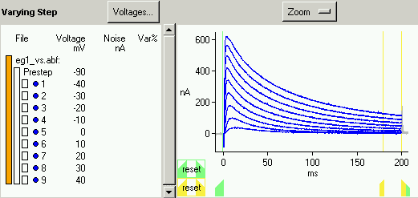
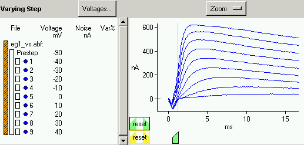

By default, the fitting region includes all of the data from the start of the voltage step to the end of the voltage step, and the noise calculation region includes the last tenth of the voltage step. This is the situation shown in Figure 1. If there is contamination in some of the data (for example at the start of the voltage step) the fitting region may need to be adjusted to exclude some data. The noise calculation region should encompass a reasonable number of points within the voltage step where the data traces are mostly flat, and may need to be adjusted to accomplish this.
|  |
| Figure 1 |
The fitting and noise calculation regions can be adjusted for all of the data of one type (varying steps or varying presteps), for each file individually, or for each sweep individually by first selecting the appropriate data with the selection bars and then using the mouse to move the sliders at the bottom of the plotting area.
The data and regions currently displayed on the plot are indicated by the orange highlighted data selection bar at the left of the data description area. There are three levels. The leftmost bar encompasses all of the data from all of the specified files, the middle bars encompass individual files, and the rightmost bars are for each individual sweep within a file. Adjusting a region at a particular level will apply that new region to all lower levels which have not themselves been adjusted. In the situation shown in Figure 2, all of the data has been selected, we have zoomed in near time zero and then have shifted the start of the fitting region so that approximately the first millisecond of data, where the recorded current is negative due to contamination, will be excluded from the fit. Note that once a region has been adjusted, the sliders and reset button are outlined in black and the data selection bar has black diagonal stripes.
|  |
| Figure 2 |
To change the fitting region for just one sweep, first select that sweep by clicking on the appropriate rightmost bar and then adjust the fitting region. To return a region to its default setting at a particular level, first select the appropriate data and then click on the "reset" button at the bottom left of the plot.